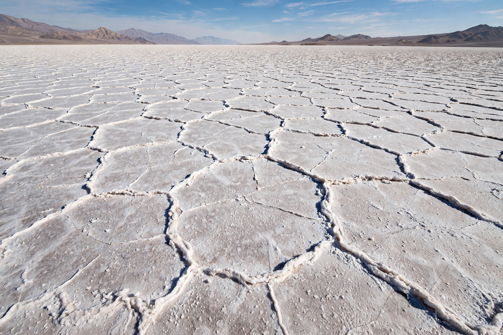

Evaporite
From Wikipedia, the free encyclopedia

An evaporite is a sedimentary rock formed by the precipitation of minerals from concentrated saline water — seawater or lake brine — as it evaporates. The principal evaporite minerals are Gypsum, Anhydrite and Halite (rock salt), with economically important deposits of Potash salts. Evaporites form in arid environments such as restricted marine basins, Sabkhas and desert lakes like the Bonneville Salt Flats.
Formation
As brine concentrates, minerals precipitate in a predictable order: carbonates first, then gypsum/anhydrite (at ~4× seawater concentration), halite (~10×), and finally potassium and magnesium 'bittern' salts. Gigantic ancient deposits — such as the Permian Zechstein of Europe or the salts left when the Mediterranean nearly dried up in the Messinian salinity crisis (5.96–5.33 million years ago) — imply long-lived restricted basins with continual inflow.
Geological significance
Evaporite layers are weak and buoyant: buried salt flows plastically, forming salt domes and diapirs that trap oil and gas, making evaporites central to petroleum geology. Thick salt also serves as an impermeable seal, and salt caverns are used for storing natural gas, hydrogen and (controversially) nuclear waste, as at WIPP.
Economic uses
Halite is mined for table salt and chemical feedstock (the Chloralkali process), gypsum for plaster and cement, and potash — notably from Saskatchewan and the Dead Sea — for fertiliser.